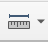

Measuring natural river levee dimensions#
The second stage of our research effort will be to measure natural river levees where they appear. These data will helop us answer the question of “what makes levees larger or smaller?”
We will only work with river reaches that have previously been identified as “abundantly” or “sparsely” leveed.
At a high level, your task will be to go through each of those river reaches, divide it into 1-km segments and record the width and height of levees in each of those segments.
Dividing the domain#
We want to sample each of these river reaches densely enough to get an estimate of both the average levee dimensions and the variation. We also want to know how many segments of the river lack levees.
To divide the river reach into segments, you can follow this procedure:
Dissolve centerline#
Each river centerline is actually made of several segments of variable length. You can see that exemplified here:
There may also be segments that are not the center of the river. Spurs, tributaries, or other connecting segments are not of interest to us. You can delete them. Just to be safe:
first Make a copy of the original file in the data drive folder where it lives.
make sure you are using the file whose name ends with “_prj”
Select the one you have loaded in QGIS in the “layers” panel
Click on the little yellow pencil icon to enable editing
Enable the selection tool
select the segments you want to remove. You can hold Shift to select multiple.
hit delete. Then click the pencil again to stop editing. It will ask you to save, so go ahead and do that.
Once you have trimmed away wll the excess segments, dissolve the feature together to make a single line. you can find that tool here
Make points evenly spaced along the line#
Now you need to make points evenly spaced along the line. We agreed to do this at 1 km = 1000 m segments
You can use this tool:
change the spacing to 1000m and accept the other default options. After this, you should have points spaced evenly along the lines! Hooray!
Taking measurements#
Note
This procedure will only work if you have QGIS 3.28 or higher. If your version is lower, please upgrade on the website. Also, make sure the projection for the map view (this is in the lower right corner) reads as WGS84 EPSG:4326
We want you to measure levee height and width, and to also record which segments of the river reach lack levees. So, once you have subdivided the domain into 1 km segments, go to the spreadsheet where we record the data, switch to the levee_measurements tab and block off n\(\times\)2 rows. For each segment, you will need two rows. Put the reach identifier on every other row of your block starting with the first row.
For each segment, first make a determination if that reach has a levee. If it does not, just mark your name and the time. leave the other columns blank. It’ll look like this:
If there is a levee, follow this procedure:
Use the measure tool: 
Identify the edge of the levee. This will be a little subjective, but you all have been looking at levees for a while now. I expect that there will be some variation. But please pick two points, one on the riverbank, and then the closest point that marks the edge of the levee where it meets the floodplain.
Use the measure tool to mark both places (left click to start, right click to end). Then as you will see in the dialog window, it should give you a latitude and longitude for each point, as well as the distance between them. Make sure this is in meters, please.
There is a copy button. Just click that, then copy and paste it into your spreadsheet double row. It will look like this.
Note whether the levee is on the left or right bank of the river. The bank is left or right from the perspective of water flowing down the river. So if you are facing downstream, you would turn your boat to the left to get to the left bank. You can find out which way the river is flowing by drawing a topographic profile using the “Profile” . Just draw a line along the river on the DEM (not the REM) and you should be able to see which way it slopes.
Note whether the river has levees on both sides or not.
Use the profile tool to measure a profile along the same line that you used with the measure tool. Find the crest of the levee (the highest point) and subtract the elevation at the levee toe (the end of your measurement line from before)